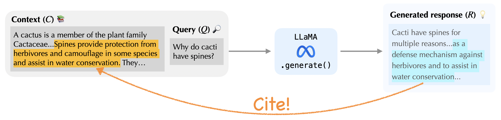
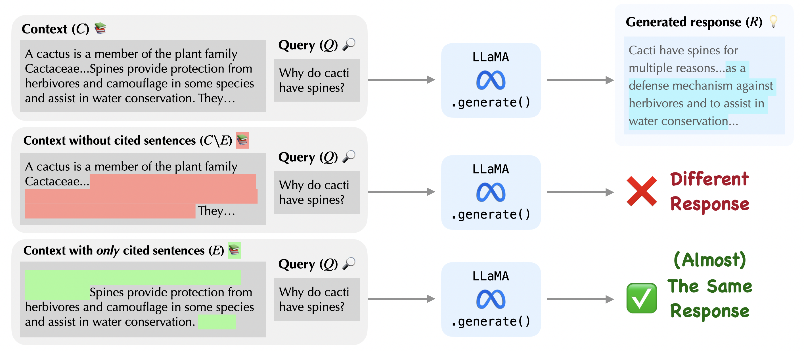
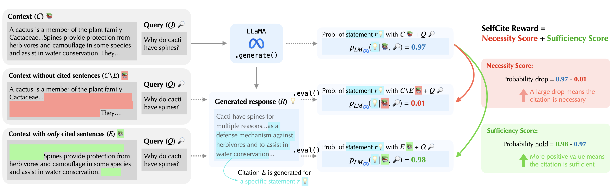
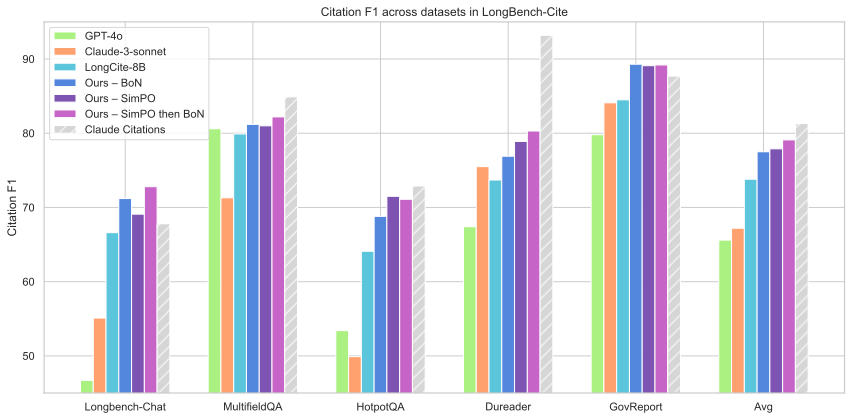

LLM-based assistants can read through millions of words of long documents and spit out confident answers in seconds—but can you trust those answers?—Probably not. Hallucinations and misinterpretations still plague even the most advanced proprietary models. As a result, users are often left with the burden of verifying answers themselves.

To ease this burden, we can ask LLMs to also cite supporting context—allowing users to verify answers in just a few seconds. But in practice, these citations are often inaccurate, pointing to unrelated or insufficient evidence. And fine-tuning LLMs to fix this problem typically requires expensive data annotation.
SelfCite is our solution: a fully self-supervised method that teaches an LLM to produce fine-grained, accurate, sentence-level citations—without a single human-labeled example or proprietary API call.
Our core idea: “If removing the cited text makes the model generate a different response—and keeping only the cited text still makes the model generate almost the same response—you’ve found the right evidence that is necessary and sufficient.”

Explanation:

We simply measure the probability change of generating $R$ after ablating the context. Two quantities are all we need:
$$\operatorname{Prob\text{-}Drop}(E)=\log p_{\text{LM}}(R\mid C)\;\; -\;\; \log p_{\text{LM}}\bigl(R\mid C\setminus E\bigr).$$
This captures whether the cited sentences are necessary for the answer.
$$\operatorname{Prob\text{-}Hold}(E)=\log p_{\text{LM}}\bigl(R\mid E\bigr)\;\; -\;\; \log p_{\text{LM}}(R\mid C).$$
This checks if the cited sentences alone are sufficient to sustain the answer.
Numbers like “0.97 - 0.01” in the figure are for intuition; the implementation uses log-domain probabilities.
$$\text{Reward}(E)=\log p_{\text{LM}}(R\mid E)\;\; -\;\; \log p_{\text{LM}}\bigl(R\mid C\setminus E\bigr).$$
This combines necessity and sufficiency in a single self-supervised reward—computed with just two forward passes and no external annotations or models needed.
We apply this reward in Best-of-N (BoN) sampling and preference optimization with SimPO. Starting from LongCite-8B (73.8 % F1), BoN and SimPO with the SelfCite reward boost its citation F1 on LongBench-Cite by up to 5.3 points (79.1 % F1), nearly closing the gap with far larger proprietary systems.

The hatched grey bar is Anthropic’s Claude Citations API—still the overall leader thanks to the much larger LLM of Claude—but the margin is now only ~2 percentage points on average, and SelfCite with merely an 8B model outperforms it on LongBench-Chat and GovReport.
We provide a simple example to show how the SelfCite rewards are assigned to the citation candidates in BoN. Please hover over the candidate citations to see which sentences they cover, and check their corresponding reward values. You will see the rewards are getting lower when more unrelated sentences are included in the citation.
[302] ✅ In general, consumer advocates believe that any comprehensive federal privacy policy should complement, and not supplant, sector-specific privacy legislation or state-level legislation.
[303] ✅ Finding a global consensus on how to balance open data flows and privacy protection may be key to maintaining trust in the digital environment and advancing international trade.
[304] One study found that over 120 countries have laws related to personal data protection.
[305] Divergent national privacy approaches raise the costs of doing business and make it harder for governments to collaborate and share data.
[306] ✅ A system for global interoperability in a least trade-restrictive and nondiscriminatory way between different national systems could help minimize costs and allow entities in different jurisdictions with varying online privacy regimes to share data via cross-border data flows.
[307] Such a system could help avoid fragmentation of the internet between European, Chinese, and American spheres.
[308] For example, Figure 2 suggests the potential of an interoperability system that allows data to flow freely between GDPR- and CBPR-certified economies.
[309] The OECD guidelines, G-20 principles, APEC CBPR, CPTPP, and USMCA provisions demonstrate an evolving understanding …
[310] The various trade agreements and initiatives … may ultimately pave the way for a broader multilateral understanding.
[311] Congress may consider the trade-related aspects of data flows in trade agreements …
Query 🔎 Please write a one-page summary of the above government report.
Answer 💡 […] The report concludes by noting that finding a global consensus on how to balance open data flows and privacy protection may be key to maintaining trust in the digital environment and advancing international trade. The report suggests that Congress may consider comprehensive privacy legislation and examine the potential challenges and implications of building a system of interoperability between different national privacy regimes […] (a single statement)
Best-of-N candidate citations 🎲 (hover to highlight)
SelfCite shows that LLMs can learn to generate precise, sentence-level citations through self-supervision. By rewarding evidence that is simultaneously necessary and sufficient for an answer, our method closes much of the citation-quality gap between smaller open models and far larger proprietary systems—without a single human label or external model APIs. We hope this lightweight approach encourages broader adoption of verifiable LLMs and sparks future work on self-improving context attribution. All code and models are released, so you can reproduce our results or build on them in your own research.
To cite this work, please use the following BibTeX entry:
@inproceedings{chuang2025selfcite,
title={SelfCite: Self-Supervised Alignment for Context Attribution in Large Language Models},
author={Yung-Sung Chuang and Benjamin Cohen-Wang and Zejiang Shen and Zhaofeng Wu and Hu Xu and Xi Victoria Lin and James R. Glass and Shang-Wen Li and Wen-tau Yih},
booktitle={Forty-second International Conference on Machine Learning},
year={2025},
url={https://openreview.net/forum?id=rKi8eyJBoB}
}